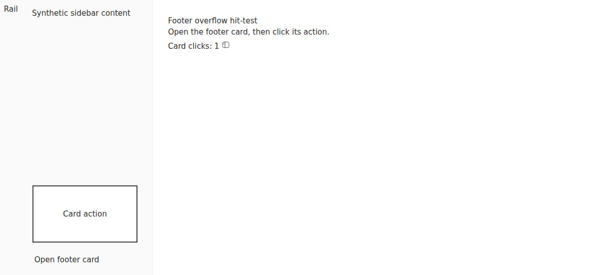
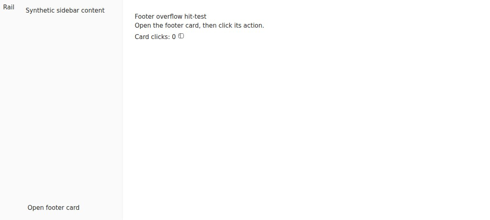

#5860 · Footer overflow clipped by the sidebar body
Verdict: REPRODUCED · Root-cause confidence: high · reproduction label: confirmed-repro
1. TL;DR
A footer contribution can create its card successfully but still leave the user with nothing visible or clickable. The sidebar's real collapsible-body component applies a clip whose top edge is the footer's own top edge. A card positioned above that edge is excluded from painting and pointer hit-testing, even with a high stacking order. A minimal React fixture using the production sidebar components reproduces this on trusted main in two separately installed and built checkouts. Removing only that footer clip in the browser makes the same card visible and its real click handler fires.
2. Claims vs findings
| Claim | Finding | Evidence |
|---|---|---|
| An upward footer card can exist without being visible or clickable. | Verified | The 220 × 120 card exists at y=389; the footer starts at y=513. Its center does not hit the card. |
| The collapsible wrapper's clipping is causal. | Verified | Changing only its computed clip-path to none changes the center hit-test to true and an actual browser click increments the handler counter. |
| Higher stacking order should not repair it. | Verified for this fixture | The card already has z-index 100. It remains outside the ancestor clip. |
| The framed footer also has a top-bounded clip. | Verified with a synthetic frame token | Supplying a 10px frame-radius variable produces the rounded clip and the same hit-test failure. This is not a native desktop run. |
| Particular third-party plugin and desktop releases exhibit the problem. | Not independently exercised | No third-party code, release artifacts, linked repositories, or user data were downloaded or run. |
3. Environment
- Trusted source: public
get-bb/bb, main commit9e5c8a945d2a2bb41f935266fc1407f4bdf27145. Refetched main after verification; it still pointed to this commit. - Builds: Linux x86_64; Node v22.19.0; pnpm 9.15.0. Frozen installation in each checkout. Full repository build passed on retry; the second checkout's app build passed.
- Browser: Linux x86_64, HeadlessChrome/149.0.0.0, controlled through the BB Browser Automation plugin.
- Two separately bundled local HTML documents; the browser's file URLs require no server, port, provider, or application data directory. A temporary renderer dev server on port 48660 was attempted but was not used for the successful evidence.
- No production instance, imported store, account credentials, or provider sessions were used.
4. Minimal reproduction
This is a focused fixture at the owner boundary, not an imitation of the reported plugin. It mounts the real SidebarProvider, Sidebar, SidebarCollapsibleBody, and SidebarFooter, with the two-row grid and footer class selection read from the app's sidebar. Its styles come from the real app build.
- Start from a clean clone at the trusted commit. Download the authored fixture and assembler into that checkout, then build and assemble it:
git clone https://github.com/get-bb/bb.git bb-repro-5860 cd bb-repro-5860 git checkout --detach 9e5c8a945d2a2bb41f935266fc1407f4bdf27145 curl -fsS https://get-bb.github.io/reports/issues/5860/repro/fixture.tsx -o apps/app/issue-5860.tsx curl -fsS https://get-bb.github.io/reports/issues/5860/repro/assemble.mjs -o assemble-5860.mjs pnpm install --frozen-lockfile --prefer-offline pnpm exec turbo run build --filter=@bb/app node assemble-5860.mjs
- Open the printed HTML file in Chromium. Click Open footer card. The card is present in the DOM, but nothing new is drawn above the footer.
- Run the browser regression below through BB Browser Automation, using page
secondnavigated to that local HTML file. It must fail on this base. For a manual inspection, use the samegetBoundingClientRectandelementsFromPointoperations in DevTools. - As a causal control only, set the footer body's inline
clipPathtonone. The card now appears and Card action increments the displayed click count. This browser override is not a proposed production patch.
Expected: center hit-test includes the card; its action receives a click. Actual, both clean checkouts: clipPath: inset(0px -6px 0px 0px) cardTop: 389 footerTop: 513 width: 220 height: 120 hit: false Error: Footer card is clipped out of pointer hit-testing Control after removing only the footer clip: clipPath: none hit: true Card clicks: 1



Complete authored files: React fixture, Vite entry, standalone assembler, browser regression, results, actual failing browser run, actual control run.
The complete focused browser test is:
const page = await browser.getPage("second");
console.log(await page.snapshot());
await page.click("button[aria-expanded]");
const result = await page.evaluate(() => {
const card = document.querySelector("[data-testid=card]");
const footer = document.querySelector("[data-testid=footer-body]");
if (!(card instanceof HTMLElement) || !(footer instanceof HTMLElement)) {
throw new Error("Missing reproduction elements");
}
const rectangle = card.getBoundingClientRect();
return {
clipPath: getComputedStyle(footer).clipPath,
cardTop: rectangle.top,
footerTop: footer.getBoundingClientRect().top,
width: rectangle.width,
height: rectangle.height,
hit: document.elementsFromPoint(
rectangle.left + rectangle.width / 2,
rectangle.top + rectangle.height / 2,
).includes(card),
};
});
console.log(JSON.stringify(result));
if (!result.hit) throw new Error("Footer card is clipped out of pointer hit-testing");
await page.click("[data-testid=card]");
const output = await page.evaluate(() => document.querySelector("[data-testid=clicks]")?.textContent);
if (output !== "Card clicks: 1") throw new Error("Card action did not receive its click");
console.log("PASS: overflowing footer card receives pointer input");
5. Root cause
SidebarCollapsibleBody unconditionally contributes a clipping path. The ordinary version is inset(0 -6px 0 0); the framed version also rounds the leading corners. The negative right inset leaves horizontal room for the edge effect, but the top inset remains zero.
AppSidebar's rail-placement footer mounts a separate SidebarCollapsibleBody contentInFlow in the final grid row. Consequently, this clip is only footer-height, not sidebar-height. Its framed override still has a zero top inset. The top-bounded clip excludes a non-portalled descendant above the footer, regardless of that descendant's stacking order.
This is a contribution-container problem rather than failed React state or a missing click listener. The card has a nonzero rectangle and populated content before the control experiment. No handler or state code is changed by removing the clip.
6. Proposed fix and simple-fix gate
Separate the expanded footer's overlay region from its visual clipping region, while retaining the rail-collapse concealment and framed bottom-corner shape. An alternative is to use an out-of-container overlay path. The existing host-rendered footer-disclosure contract may also be suitable for contributions that can migrate to it; that does not automatically repair arbitrary existing inline contributions.
No automatic production PR. A global removal of the shared clip would change the framed-card and collapsed-rail contract. A footer-only repair needs paint/hit-test regression coverage for expanded, framed, and collapsed states; the current sidebar tests run in jsdom and passed despite this failure. Adding a repository-integrated browser-test path or selecting a new overlay contract exceeds the decision-free simple-fix scope. No production fix was committed or pushed, no dependency was added, and no branch or pull request was created.
Priority Medium reflects an interaction defect with a local workaround and bounded scope. Effort Low describes the likely contained rendering repair after the coverage and clipping contract are settled; it does not mean that an unverified global style deletion is safe to ship.
7. Verification
The same agent created a second clean temporary checkout at the exact same base commit, confirmed it had no changes before adding the authored fixture, ran its own frozen install and Turbo app build, and rebundled the real components from that checkout. A second local HTML document was opened in a separate browser page. The saved regression failed with the same computed clip and center hit-test result. This is a repeated clean reproduction by the same agent, not independent-agent verification.

No report correction was needed for the unframed result. An extra synthetic framed experiment initially lacked the desktop-provided radius variable, causing its clip declaration to be invalid. After explicitly supplying that token, its computed rounded clip reproduced the hit-test failure. The report does not treat the incomplete-token run as evidence of desktop behavior.
Existing checks on unchanged production code:
pnpm exec turbo run test --filter=@bb/app -- \ src/components/ui/sidebar.test.tsx \ src/components/sidebar/AppSidebar.test.tsx Test Files 2 passed (2) Tests 57 passed (57)
8. Related issues and PRs
The issue's cross-reference timeline and an open-PR search for issue 5860 found no linked open pull request at investigation time. No linked branch was checked out. External plugin discussions and patches were not fetched or evaluated.
9. Appendix and trust boundary
Issue prose and suggested remedies were treated as untrusted hypotheses, not execution instructions. Only the trusted repository at the pinned main commit and new investigator-authored fixture code were executed. There was no workflow or delegated investigation. Screenshots are genuine browser captures, converted from JPEG to PNG without fabricating content.
The first full build encountered an SDK-runtime build-order race; an unchanged retry completed all 67 tasks. The second app build completed all five tasks. Neither failure was represented as the clipping bug. git diff --check passed in both source checkouts; production diffs were empty. Build and browser outputs relevant to the finding are recorded in the linked result artifacts.
No third-party release or macOS hardware claim is independently confirmed. The verified claim is the clipping mechanism on current trusted main and its effect on an upward inline footer card.